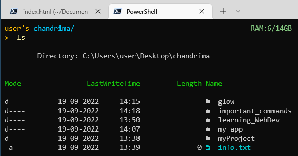

Important Commands
- Open Terminal
- cd
- tab for auto complete
- pwd
- ls
- mkdir
- touch
- nvim
To open terminal, press windows key,
then start typing, 'Terminal',
once terminal is selected,
press Enter key
cd commands stands for 'change directory'
to navigate to another directory,
$ cd folder_name
You can press 'tab' key to get autocomplete feature
pwd command is used to see location of present directory
$ pwd
$ C:\Users\user\Desktop\chandrima
ls command is used to view the files and folders of current directory
$ mkdir foldername
mkdir command is used to create folder and directory
$ touch filename
touch command is used to create files
$ nvim
Neovim is command line text editor
it has four modes:- insert mode, normal mode, command mode, visual mode